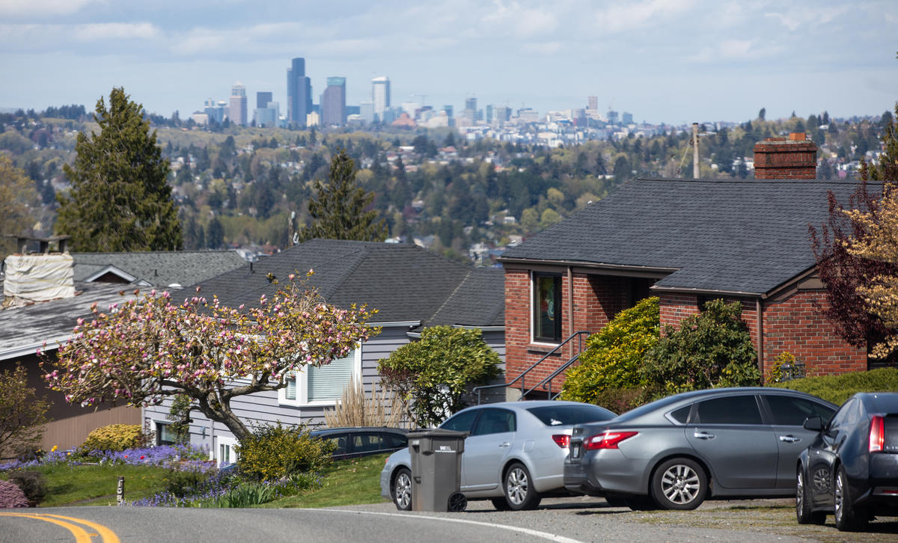

Gentrification
Gentrification occurs as a result of young, affluent individuals moving into neighborhoods historically home to BIPOC families, which leads to their displacement (Fogel). While gentrification can have some benefits -- such as reducing crime levels and creating new business opportunities -- it can lead to a loss of community, culture, and history. Seattle has been identified as the third most quickly gentrifying city in the United States (Fogel), and in this page, we'll specifically look at gentrification in its Chinatown-International District.

Photo is from Syed, "https://crosscut.com/equity/2022/04/king-county-initiative-wants-prevent-further-gentrification."